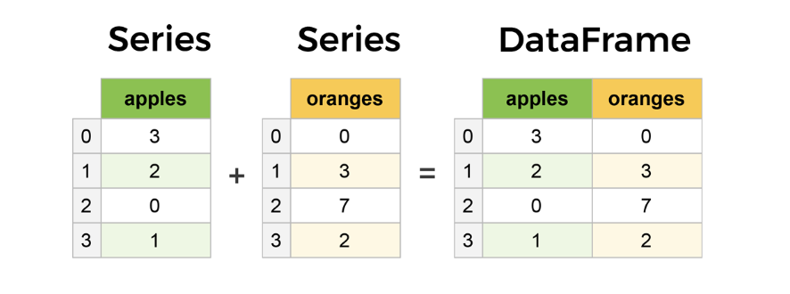
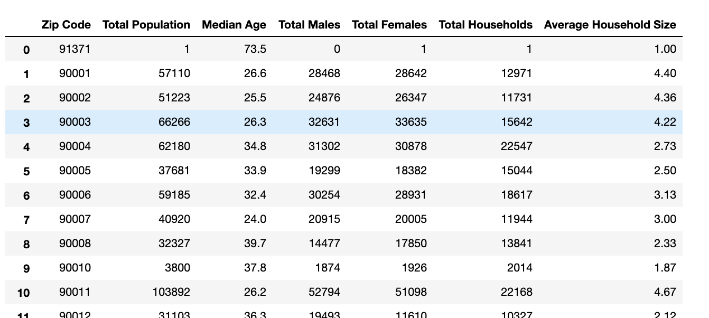
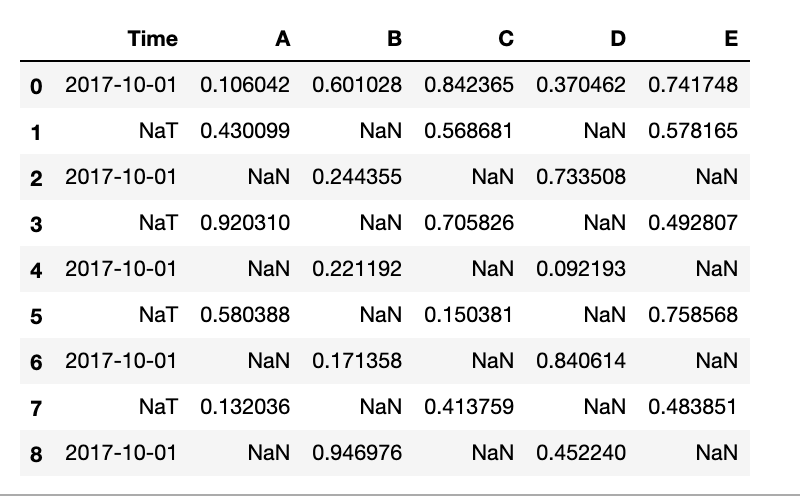
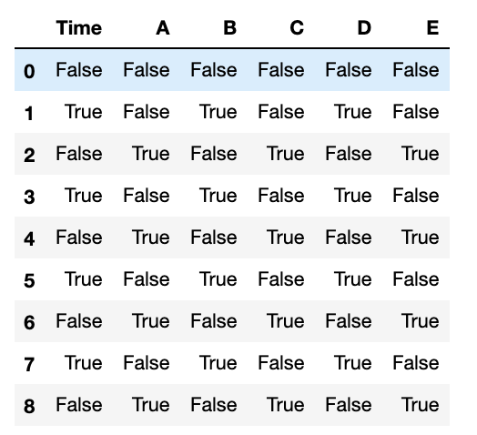
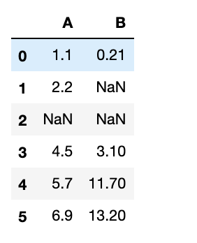
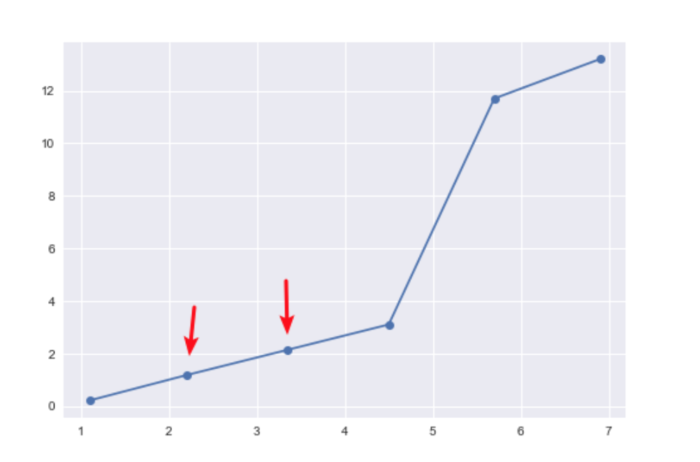

此为实验楼楼+机器学习前置课程Pandas 数据处理基础课程学习笔记
基于NumPy 开发
数据类型
- Series（一维数组）
- DataFrame（二维数组）
- Panel（三维数组）
- Panel4D（四维数组）
- PanelND（更多维数组）
。其中 Series 和 DataFrame 应用的最为广泛，几乎占据了使用频率 90% 以上。
Series
数据结构
1 | pandas.Series(data=None, index=None) |
data可以使字典，也可以是NumPy中的ndarrayindex为索引
初始化
1 | %matplotlib inline |
使用 NumPy
1 | import numpy as np |
DataFrame
它仿佛是由多个 Series 拼合而成。它和 Series 的直观区别在于，数据不但具有行索引，且具有列索引

基础结构
1 | pandas.DataFrame(data=None, index=None, columns=None) |
data 的数据类型
- 一维数组、列表、字典或者 Series 字典。
- 二维或者结构化的
numpy.ndarray。 - 一个 Series 或者另一个 DataFrame。
初始化
1 | # 1 Series |
用NumPy随机生成
1 | pd.DataFrame(np.random.randint(5, size=(2, 4))) |
数据读取
读取cvs数据
1 | import pandas as pd |

1 | # 读取前8个数据 |
数据选择
基于索引数字选择
选取前三行数据
1 | df.iloc[:3] |
选定一行
1 | df.iloc[5] |
df.iloc[] 的 [[行]，[列]] 里面可以同时接受行和列的位置
选取1、3、5行
1 | df.iloc[[1, 3, 5]] |
选取2-4列
1 | df.iloc[:, 1:4] |
基于标签名选择
使用 df.loc
选择前三行
1 | # 首尾都包括在内 |
选择1、3、5行
1 | df.loc[[0, 2, 4]] |
选择2-4列
1 | # 这里第二行为列的名称 |
选择1、3行和Median Age 后面的列
1 | df.loc[[0, 2], 'Median Age':] |
数据删减
以 .drop 开头的方法都与数据删减有关。
设定 labels 指定标签，通过 axis 指定按列或按行删除
1 | # 删除指定标签下所有的数据 |
数据去重
1 | df.drop_duplicates() |
删除数据中空缺的数据列和数据行
1 | df.dropna() |
数据填充
我们一般不会乱填数据，而更多的是对缺失值进行填充。存在但明显不正确的数据也被归为缺失值一类
检查缺失值
将不同类型数据的缺失均采用 NaN 标记，时间戳缺失也用这个来表示。使用函数 isna() 和 notna() 来判断
首先先认为生成一组含缺失值的数据
1 | # 9行5列，列名分别为A、B、C、D、E |

执行 df.isna() 即可确认整个数据表的缺失值情况

将缺失值都填充为一个值
1 | df.fillna(0) |
使用缺失值前面的值进行填充
1 | df.fillna(method='pad') |
使用缺失值后面的值进行填充
1 | df.fillna(method='bfill') |
出现连续缺失值的情况，使用 limit 参数设置最多连续填充的数量
1 | df.fillna(method='pad', limit=1) # 最多填充一项 |
使用平均值填充
1 | # 对 C 列和 E 列用平均值填充。 |
插值填充
借助于一个函数（线性或非线性），再根据已知数据去求解未知数据的值。interpolate()
生成测试数据
1 | df = pd.DataFrame({'A': [1.1, 2.2, np.nan, 4.5, 5.7, 6.9], |

使用默认的线性插值
1 | df_interpolate = df.interpolate() |
插值后，其符合变化趋势

- 如果你的数据增长速率越来越快，可以选择
method='quadratic'二次插值。 - 如果数据集呈现出累计分布的样子，推荐选择
method='pchip'。 - 如果需要填补缺省值，以平滑绘图为目标，推荐选择
method='akima'。